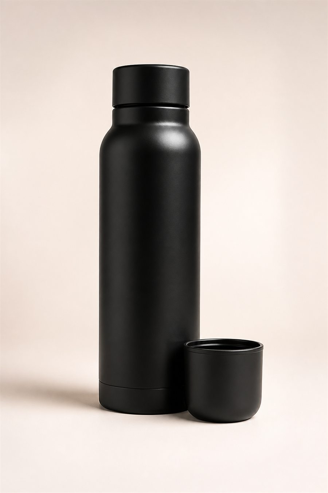
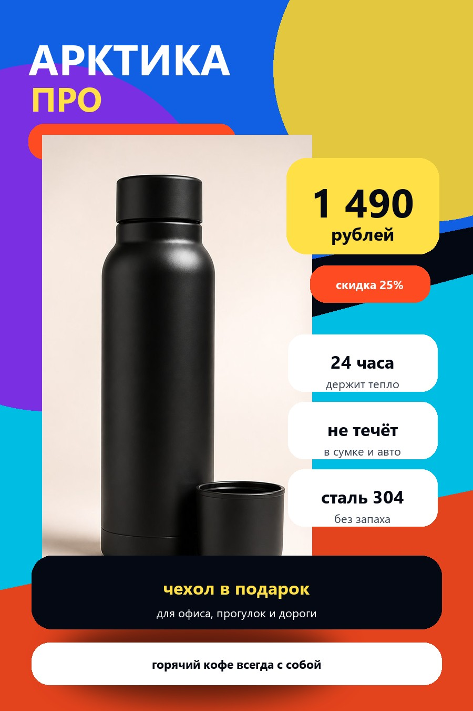

Промтзилла
Как сделать карточку товара для маркетплейса через нейросеть
Загрузи исходное фото товара, а ИИ онлайн соберёт яркую продающую карточку: крупный предмет, сильный заголовок, цена, скидка, преимущества и акцент, который цепляет в ленте.
Для карточки товара лучше всего подойдут GPT Image 2, Nano Banana PRO или Qwen Image 3: они работают с предметными фото, крупным текстом и рекламной композицией.
Пошаговая инструкция
- 1Подготовь фото товара без лишних деталей, чтобы предмет можно было крупно поставить в центр карточки.
- 2Придумай название, цену, скидку, три-четыре характеристики и главный повод купить товар.
- 3Попроси нейросеть сделать не шаблон, а готовый рекламный макет с реальными данными.
- 4Следи, чтобы текст был крупным, русским, коротким и читался с мобильного превью.
- 5Убери всё лишнее: мелкий текст, пустые плейсхолдеры, случайные логотипы и слабые бледные цвета.
Пример

ДоОбычное фото товара без дизайна, цены и преимуществ.

ПослеГотовая яркая карточка для термобутылки «Арктика Про»: крупный товар, контрастный фон, цена, скидка, характеристики и сильный оффер.
Промпт
РУ
Загружаю фото товара. Сделай из него яркую продающую карточку для маркетплейса.
Товар: {{НАЗВАНИЕ_ТОВАРА}}
Бренд или линейка: {{БРЕНД_ИЛИ_ЛИНЕЙКА}}
Цена: {{ЦЕНА}}
Скидка или акция: {{СКИДКА_ИЛИ_АКЦИЯ}}
Главный заголовок: {{ГЛАВНЫЙ_ЗАГОЛОВОК}}
Характеристики: {{ХАРАКТЕРИСТИКА_1}}, {{ХАРАКТЕРИСТИКА_2}}, {{ХАРАКТЕРИСТИКА_3}}
Подарок или бонус: {{ПОДАРОК_ИЛИ_БОНУС}}
Цвета карточки: {{ЦВЕТА_КАРТОЧКИ}}
Формат: {{ВЕРТИКАЛЬНЫЙ_ФОРМАТ_900_НА_1350}}
Если данных нет, используй пример:
Товар: термобутылка «Арктика Про»
Цена: 1 490 рублей
Скидка: 25%
Главный заголовок: горячий кофе всегда с собой
Характеристики: 24 часа держит тепло, не течёт в сумке, сталь 304 без запаха
Бонус: чехол в подарок
Требования к визуальному стилю:
- сделай карточку яркой, контрастной и заметной в ленте
- используй крупные цветовые пятна: синий, бирюзовый, жёлтый, оранжевый или другие насыщенные цвета
- добавь диагональные формы, большие круги, цветные блоки и сильный фон, а не бледную белую подложку
- товар должен занимать примерно половину высоты карточки и быть главным объектом
- ценник должен быть очень крупным, контрастным и заметным с первого взгляда
- оставь только один главный заголовок, один ценник, скидку, 3 преимущества и один бонус
- преимущества оформи крупными короткими блоками, без длинных предложений
- дизайн должен выглядеть как готовая рекламная карточка, а не как шаблон
- избегай скучного каталожного вида, серых фонов, мелкого текста и пустых зон
- весь текст только на русском языке
- не используй английские слова и латинские плейсхолдеры на карточке
- не оставляй пустые плейсхолдеры на итоговой картинке
- без случайных логотипов, водяных знаков и мелкого нечитаемого текста
Теги
Эта страница подходит для работы онлайн: промпт можно использовать с ИИ и нейросетью, а плейсхолдеры заменить под свою задачу.